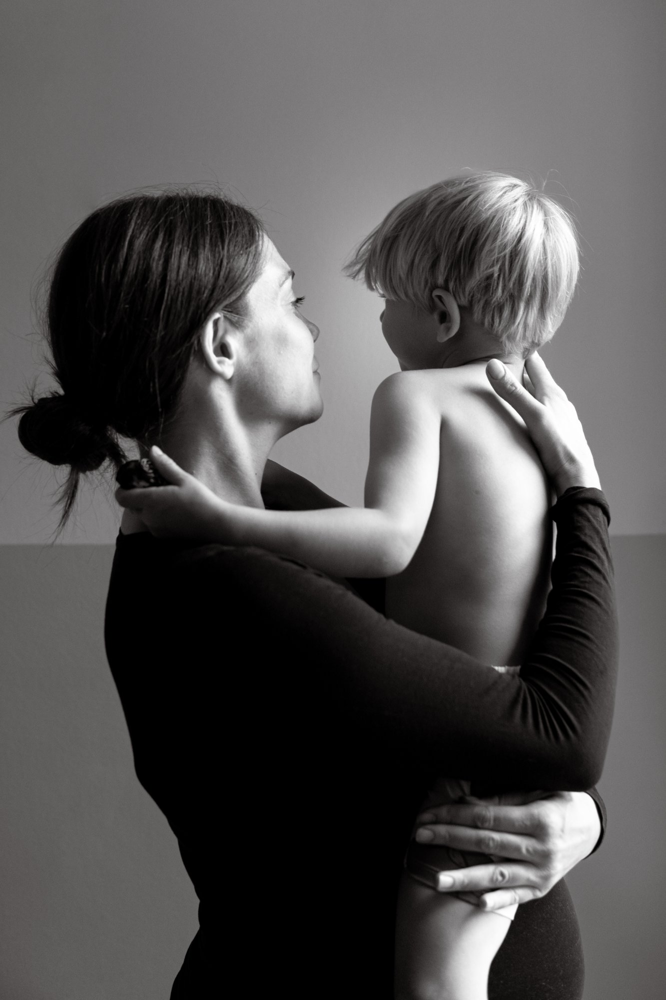

Your Newborn
Session
A little guide to the weeks ahead
You're booked.
Thank you for trusting me with these first few weeks. It's a blur of a stage and a precious one, and I don't take it lightly.
This guide covers everything you need: what to expect, what to have ready, and what happens once your photographs arrive. Read it whenever you get five quiet minutes, which I know are rare right now.
Anything I haven't covered, just ask.
Cam x
I'm Cam, and I photograph families and motherhood across Hertfordshire.
I'm a mum myself, which is the short version of why I photograph the way I do. I remember the newborn weeks: the exhaustion, the staring, the sense that it was all happening too fast to hold onto. Those weeks are what these photographs are for.
My work is story-led. I'm not there to arrange your baby into a picture, I'm there to spend a morning with you and catch what actually happens.
Newborn sessions work a little differently as I hold an open booking. When the little one arrives, drop me a message and we'll book a date.
The first three to four weeks are lovely, but there's no cliff edge. Newborns are sleepiest and curliest in the first two weeks; older babies are more alert and give you different photographs, equally worth having.

Four steps to your session.
Fill in your quick client questionnaire. It helps me get to know you and your family and what matters most to you, so we can tailor the session entirely around your world.
When your little one makes their arrival, send me a quick text or email whenever you are settled. We will lock in your exact session date.
Sit back, sip a hot coffee (or tea!), and take a breath. There's no pressure, no strict timeline, and no forced smiles; just a calm, gentle morning capturing your new rhythm together.
Within two weeks of your shoot, your private online gallery will arrive in your inbox, ready for you to cosy up and swoon over your pictures.

At home, almost always.
I'll capture the first few weeks as they actually are. The baby on your chest. The older sibling peering in. Your bed at eleven in the morning. The feeding, the swaying, the staring. It's quieter than a family session and it's meant to be, but it's still story-led, and there's still plenty of feeling in it.
I block out 3 full hours for our time together, so you never have to feel rushed or stressed. We move entirely at your baby's pace.
- Carry on as you would. Feed, change, sway, sit. That's the session.
- Look at the baby, not at me. Almost every frame you'll love is you looking at them.
- Skin contact reads beautifully. Hands, cheeks, a head tucked under a chin.
- Put on a favourite playlist. Music works magic to soften quiet moments and help everyone relax.
This might feel like a tender time if you are not feeling quite like yourself yet, still healing, still adjusting. I will photograph you kindly and gently guide you. And if there's anything you'd rather I was mindful of, tell me, and I will quietly work around it.

The little details, kept comfortable.
I love capturing those sweet, simple shots that highlight your baby's delicate skin and tiny details! Turn up the thermostat if needed to keep your little one comfortable while they are less dressed.
Feed whenever the baby needs feeding; it's not an interruption.
If they're unsettled, we pause and start again when everyone is ready. Nothing about this session runs to a schedule.
If a session takes three hours because of two feeds and a change, that's a completely normal newborn session. There's no clock.
Soft, plain, and like yourself.
A few gentle suggestions to help you feel prepared — nothing more than that.
- Prioritise comfort. Soft, plain, and breathable: anything you'd genuinely relax in (and easily feed in, if applicable).
- Bare feet are welcome. Yours too.
- Stick to neutrals. Soft tones keep the focus on your connection.
Avoid: big logos, slogans, busy prints, or bright tones, which bounce unwanted colour onto skin.
Keep bedding in the same colour family: plain white, cream, or soft grey works best. Patterned bedding pulls the eye straight off the baby.
I'm building a small, curated client wardrobe with simple, lovely pieces for mums and babies. If you'd like to borrow something, just drop me a message.
Newborns look best in simple, classic pieces. A simple plain white or cream ribbed bodysuit, a soft footie sleeper, or even just a plain nappy with a beautiful swaddle blanket is perfect.
Choose clothes that move with you and feel gentle against your skin. Soft, flowy maxi dresses, loose button-downs, chunky cardigan layers, or high-waisted wide-leg trousers are all brilliant.
Relaxed pieces that let you move easily and hold the baby snug. A classic linen shirt, a soft henley, or a well-fitted crewneck with soft chinos, linen trousers, or relaxed neutral jeans all look great.
Kids should feel like themselves! Soft dresses, simple linen tops, plain tees, or relaxed overalls all work really well.
At the end of the day, these are just suggestions to help you feel prepared. The most important thing is that you feel like you.
Lay out what everyone's wearing the night before, alongside the blanket or muslin you'd like in the photographs. And don't feel limited to one look, I'm happy for outfit changes during our time together.
Both are very welcome.
They're usually at their best in the first twenty minutes, so we'll capture their moments early and let them go play. Have snacks and a comfort item nearby, and please don't force smiles. A reluctant cuddle is a real part of this story.
If the dog is part of the family, the dog is part of the photographs.


A lived-in home is exactly right.
We'll focus on cosy, bright spots in your home: typically the nursery, master bedroom, or living room near big windows with lovely natural light. When I arrive I'll do a quick walk-through to see where the light is working its magic. Don't worry about adjusting blinds or moving furniture; I'll handle all of that.
And please don't stress about cleaning! A real, lived-in home is what makes these photographs feel like yours. Just clear away any everyday clutter like water bottles and chargers from the main bedside tables, sofa, or nursery surfaces.
- Turn the heating up if needed, so the space is warm enough for the little one to be comfortable when less dressed.
- A feed pre-session might help little one feel settled, but no stress if it doesn't happen, we have plenty of space for feeds mid-session.
- If you'd love breastfeeding or bottle-feeding photos, let me know! We can easily capture these whenever your little one is ready.
Take a deep breath. Feed the baby when they need it, sit down with a hot drink, and let it all unfold naturally. You don't need to host or direct, just relax and enjoy the quiet moments with your family.
If someone's poorly, or it's just not the day we move it. Newborn weeks are unpredictable, and I plan around that, not against it. If you wake up and it's simply not happening, message me and we'll find another date.
Your photographs, hand-edited.
Within two weeks, a private online gallery will land in your inbox. Every image is hand-edited by me, so you get a beautiful, consistent set of photographs.


Your session includes your favourite 5 digital images, chosen by you. You will see the full gallery before you decide. If you fall in love with more, upgrading is simple and completely pressure-free.
You can order professionally printed, colour-managed prints directly from your gallery. For heirloom pieces such as albums, I design and assemble these personally. If you'd like to see options, just let me know when your gallery arrives.
A few things you might be wondering.
No. No props, baskets, or posing baby into artificial shapes. My work is about your first weeks at home as they actually are.
I keep props to a minimum so the focus stays entirely on the real, quiet connection between you and your baby. But if you have a special heirloom, hand-knit blanket, or meaningful keepsake you'd like included, bring it along, and we will naturally weave it in so it feels completely authentic to your home and family.
Absolutely! Those frames are often deeply special. To keep the session calm and unhurried, I invite grandparents to pop in for about 30 minutes at the beginning or end. Just let me know in advance.
I'd love you to. All I ask is that you skip Instagram filters or heavy cropping so the custom edits stay consistent. A tag is always appreciated, but never required.
Tell me, and we'll shape everything around your comfort.
Your gallery stays live for 3 months, and you can order additional images or prints at any point during that window.

I can't wait to meet you all. Any questions at all before the day, just say the word.
Cam x